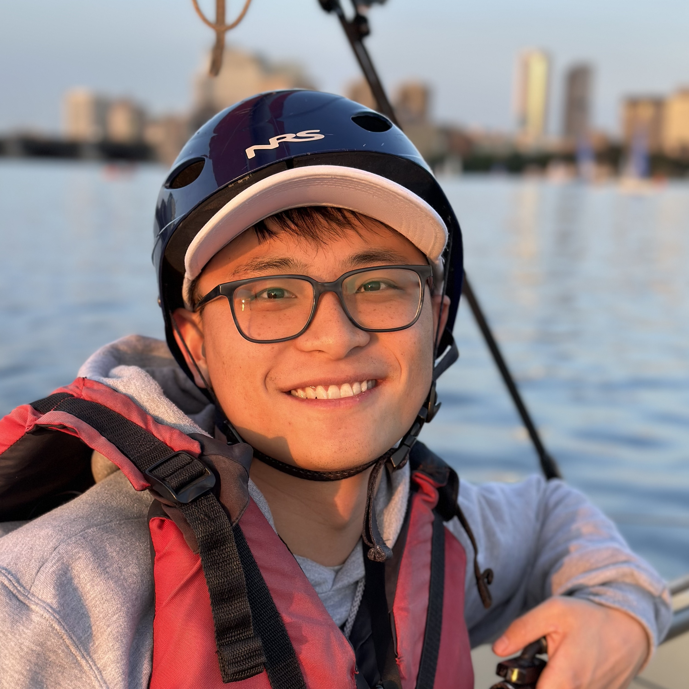
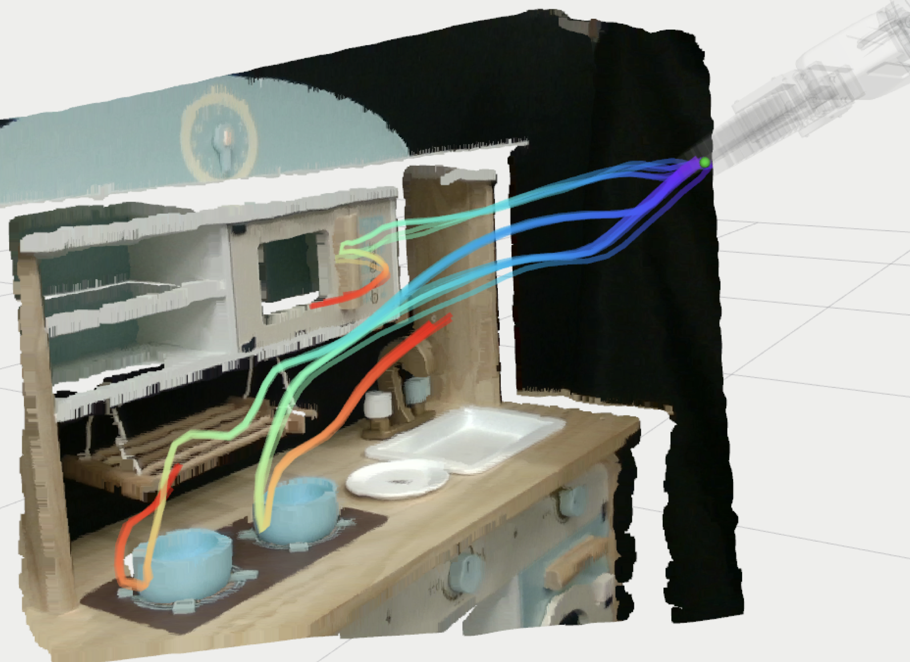
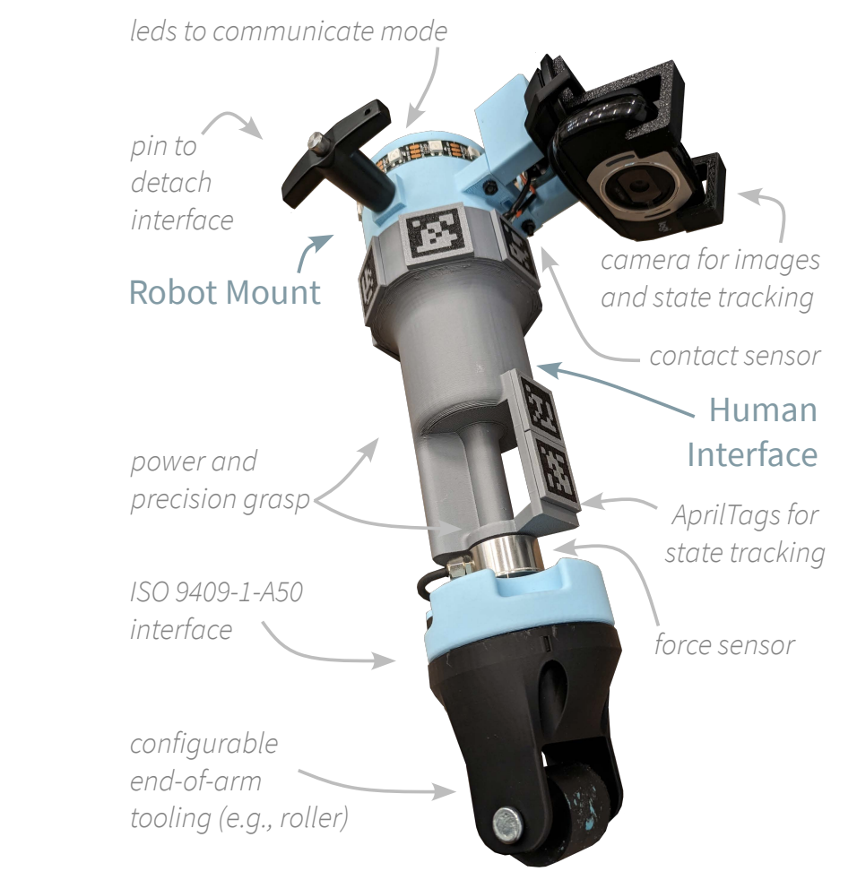
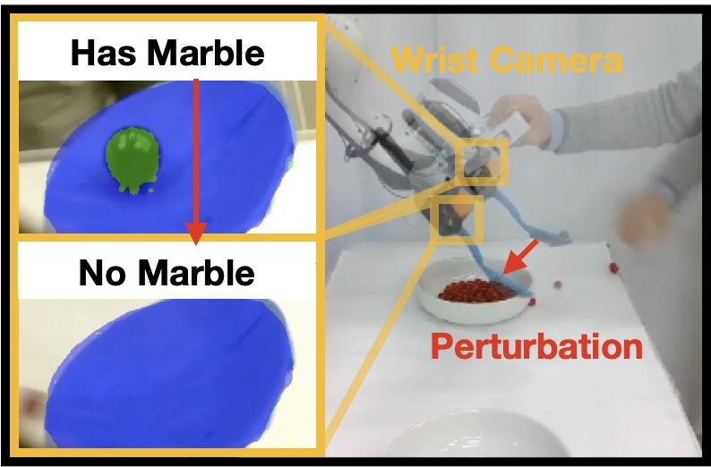
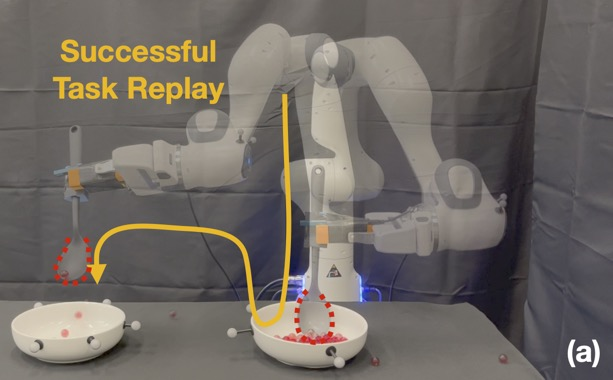
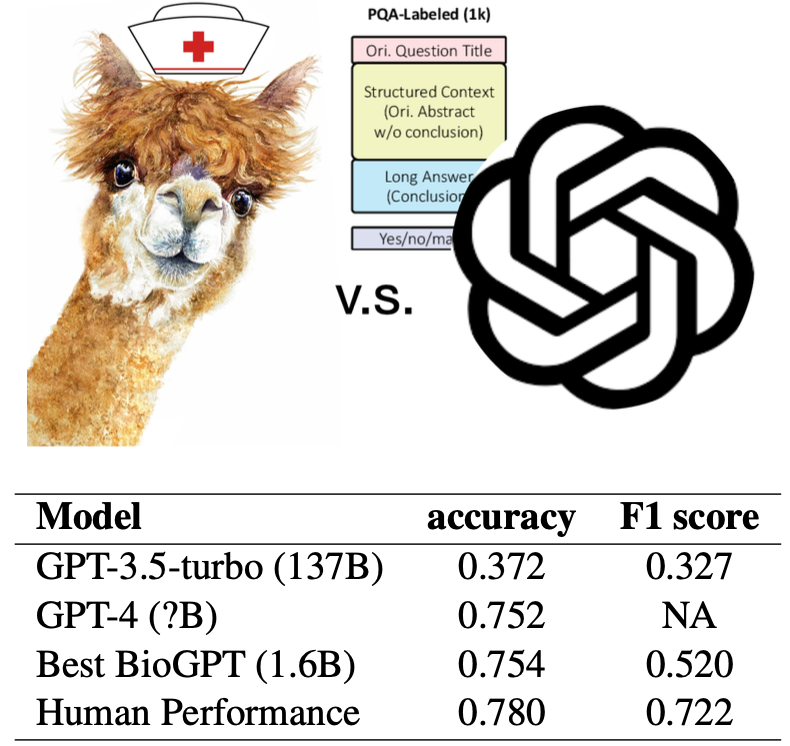
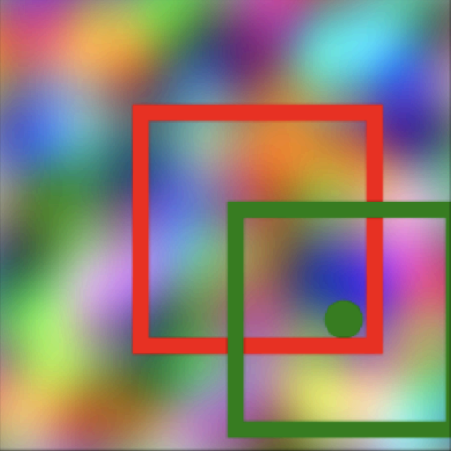
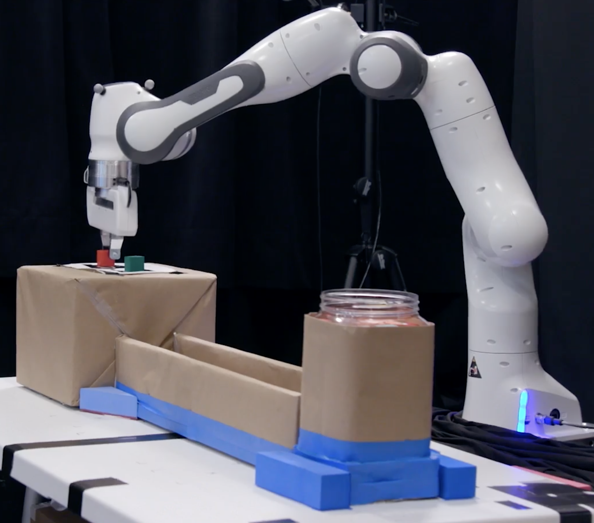

Felix Yanwei Wang
I am a member of technical staff at Generalist AI. I graduated from MIT EECS, working with Julie Shah on human robot interaction, specifically, inference-time policy steering (toggle).Imagine driving with Google Maps, where multiple routes unfold before you. As you take turns and change plans, it adapts instantly recalculating to match your shifting preferences. My research goal is to bring this level of interactivity to multimodal embodied AI, empowering users to steer pre-trained foundation models without additional training. For video explainers, check out my MIT Student Spotlight (more technical) or Bloomberg News (more accessible). Before MIT, I studied robotics at Northwestern and physics at Middlebury. Outside research, I enjoy theatre and backpacking – I thru-hiked PCT in 2019.
X (Twitter)
G. Scholar
LinkedIn
CV
PhD Thesis
Defense Talk
Emailfelix at generalistai dot com

2026
Generalist interview about improvisational intelligence2025
Research featured on Bloomberg News – "The Rise of AI in Factories"2023
IROS 2023 Workshop Best Student Paper Award
Inference-Time Policy Steering through Human Interactions
Yanwei Wang, Lirui Wang, Yilun Du, Balakumar Sundaralingam, Xuning Yang, Yu-Wei Chao, Claudia Perez-D'Arpino, Dieter Fox, Julie Shah
IEEE International Conference on Robotics and Automation (ICRA) 2025
Webpage •
PDF •
Code •
Twitter •
MIT News • (toggle)
We present inference-time policy steering (ITPS), a framework that steers foundation model policies at inference-time through human interactions. We introduce six diverse interaction types that represent common human interventions during robot task execution. These interactions ground spatiotemporal constraints into a cost function on the predicted actions and guide the policy to produce adaptive policies for downstream tasks without any additional data collection or fine-tuning.

Versatile Demonstration Interface: Toward More Flexible Robot Demonstration Collection
Michael Hagenow, Dimosthenis Kontogiorgos, Yanwei Wang, Julie Shah
IEEE/RSJ International Conference on Intelligent Robots and Systems (IROS) 2025
PDF • (toggle)
We present the Versatile Demonstration Interface (VDI), a collaborative robot tool designed to enable seamless transitions between data collection modes—teleoperation, kinesthetic teaching, and natural demonstrations—without the need for additional environmental instrumentation.

Grounding Language Plans in Demonstrations through Counter-factual Perturbations
Yanwei Wang, Tsun-Hsuan Wang, Jiayuan Mao, Michael Hagenow, Julie Shah
International Conference on Learning Representations (ICLR) 2024
★ Spotlight, ICLR ★
Webpage •
PDF •
Code •
MIT News •
TechCrunch • (toggle)
This work learns grounding classifiers for LLM planning. Our end-to-end explanation-based network is trained to differentiate successful demonstrations from failing counterfactuals and as a by-product learns classifiers that ground continuous states into discrete manipulation mode families without dense labeling.

Temporal Logic Imitation: Learning Plan-Satisficing Motion Policies from Demonstrations
Yanwei Wang, Nadia Figueroa, Shen Li, Ankit Shah, Julie Shah
Conference on Robot Learning (CoRL) 2022
★ Oral Presentation, CoRL ★
★ Best Student Paper, IROS 2023 Workshop ★
Webpage •
PDF •
Code •
PBS News • (toggle)
We present a continuous motion imitation method that can provably satisfy any discrete plan specified by a Linear Temporal Logic (LTL) formula. Consequently, the imitator is robust to both task- and motion-level disturbances and guaranteed to achieve task success.

Improving Small Language Models on PubMedQA via Generative Data Augmentation
Zhen Guo, Yanwei Wang, Peiqi Wang, Shangdi Yu
KDD 2023 Workshop (Foundations and Applications in Large-scale AI Models)
PDF • (toggle)
We prompt large language models to augment a domain-specific dataset to train specialized small language models that outperform the general-purpose LLM.

Visual Pre-training for Navigation: What Can We Learn from Noise?
Yanwei Wang, Ching-Yun Ko, Pulkit Agrawal
IEEE/RSJ International Conference on Intelligent Robots and Systems (IROS) 2023
NeurIPS 2022 Workshop (Synthetic Data for Empowering ML Research / Self-Supervised Learning)
Webpage •
PDF •
Code • (toggle)
By learning how to pan, tilt and zoom its camera to focus on random crops of a noise image, an embodied agent can pick up navigation skills in realistically simulated environments.

MIT Museum Interactive Robot Exhibition: Teach a Robot Motions
Nadia Figueroa, Yanwei Wang, Julie Shah
MIT Museum • (toggle)
We installed an interactive exhibition at MIT Museum that allows non-robot-experts to teach a robot an inspection task using demonstrations. The robustness and compliance of the learned motion policy enables visitors (including kids) to physically perturb the system safely 24/7 without losing a success guarantee.
2025
Google DeepMind – "Inference-Time Policy Steering"2024
MIT EI Seminar – "Inference-Time Policy Customization through Interactive Task Specification"2025
MIT News coverage of our ICRA 2025 paper on inference-time policy steering2024
International Conference on Learning Representations (ICLR) Spotlight2022
Conference on Robot Learning (CoRL) Oral Presentation2019
Thru-hiked the Pacific Crest Trail (2,650 miles, Mexico to Canada)